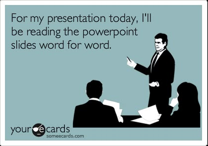

My Technical Goals
< Back to home
Contrary to popular belief, I do actually have things I could improve on with my technical skills. If they would stop developing javascript frameworks... I'd have a few fewer things to learn. But it's okay, this new framework will fix ALL the issues of ALLt he other frameworks, for sure this time. Anyway, here are some skills I want to work on and when I'll do it!
- AWS Solutions Architect - Associate
- That's right! Screw Javascript! We're heading to the big kid's table and trying to move up the ladder into becoming a solutions architect. Please don't make me program anymore, I can't keep up with the youth and vibecoders
- Start Date: January 1st 2027
- End Date: September 1st 2027
- AWS Solutions Architect - Professional
- Look, I can't just stay at the associate level okay? I need a job. Please hire me. Surely this will give me enough time to build out my ADRs and start to finish solutions for portfolios. Did I mention I'm looking for a job?
- Start Date: September 2nd 2027
- End Date: June 30 2028
- Micrososft Office Specialist: Powerpoint Associate
- It's good to have backup plans. Thing's don't always work out. Who knows, maybe my calling is just making really kickass powerpoints. I mean decks. Slides? What does FAANG call it these days? At least AI won't take this job.... right?
- Start Date: July 1 2028
- End Date: Jule 30 2028
